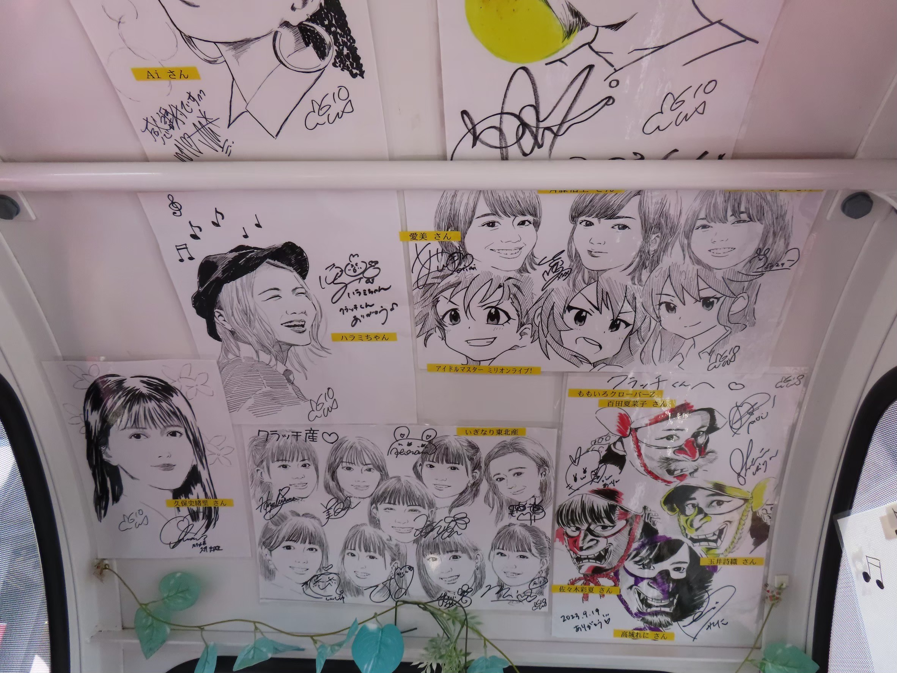

2024.08.01
メシ
記事タイトル
球場メシは本当に種類が豊富。選手が考案したオリジナルメニューもたくさん！食事系からスイーツ、試合が〇回以降から販売されるメニューもあり、試合を見て買い物をしてと大忙し。もちろん、ファストフードの取り扱いもあり！
ちなみに私は、一周回ってサワーと銀だこの組み合わせをマストでいただいています笑

テキストテキストテキストテキストテキストテキストテキストテキストテキストテキストテキストテキストテキストテキストテキストテキストテキストテキストテキストテキストテキストテキストテキストテキストテキストテキストテキストテキストテキストテキストテキストテキストテキストテキストテキストテキストテキストテキストテキストテキストテキストテキストテキストテキストテキストテキストテキストテキストテキストテキストテキストテキストテキストテキストテキストテキストテキストテキストテキスト